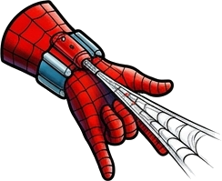
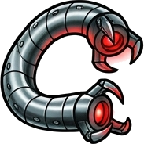
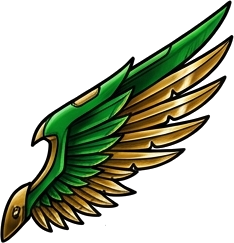
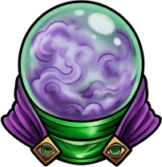
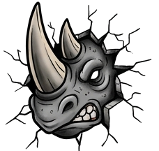
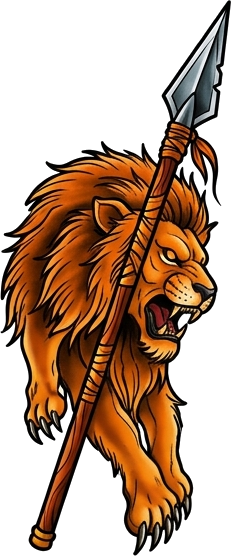
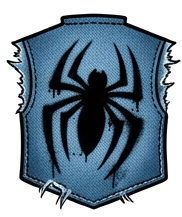
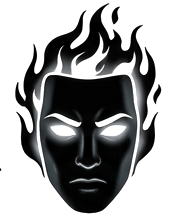
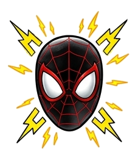
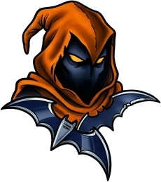

Un gran poder, mil pantallas
Responsive significa que tu web responde a la pantalla en la que se ve: el móvil, la tablet, el portátil o el monitor gigante. Un solo HTML y un solo CSS… que se adaptan a todos.
Su poder: adaptarse a cualquier edificio · El tuyo: adaptar la web a cualquier pantalla
El problema: las webs de ancho fijo
Hasta ahora quizá has escrito cosas como width: 600px. En un portátil queda bien, pero un móvil mide entre 360 y 430 píxeles de ancho. La caja no cabe y aparece el temido scroll horizontal: hay que mover la página de lado a lado para leer. Eso es lo primero que el responsive viene a eliminar.
Abajo tienes un simulador de pantallas. Dentro hay una web de verdad. Pulsa los botones de dispositivo o arrastra la barra para cambiar el ancho de la pantalla simulada:
La barra negra cambia el ancho de la pantalla. Si la pantalla es más grande que el hueco disponible, se ve a escala (te lo indica el porcentaje). Debajo verás el código: pulsa ✎ Editar para cambiarlo y ver el resultado al momento.
Los ingredientes del responsive
El término lo inventó Ethan Marcotte en 2010 con tres ingredientes. Hoy añadimos un cuarto. Cada uno tiene su capítulo:
Medidas que se adaptan (%, max-width…) y layouts flexibles con Flexbox y Grid. Capítulos 2 y 3.
CSS que solo se aplica si la pantalla cumple una condición. Capítulos 4, 5, 6 y 9.
Imágenes que nunca se salen de su caja y cambian según la pantalla. Capítulos 7 y 8.
Medidas que crecen solas con clamp(), variables, modo oscuro y componentes que miran a su caja. Capítulos 10 a 13.
La línea que no puede faltar: meta viewport
Los móviles, por defecto, fingen ser una pantalla de unos 980px y lo encogen todo para que quepa: el texto sale diminuto y tienes que hacer zoom. Para decirle al móvil "usa tu ancho real", todo HTML responsive lleva esta línea dentro del <head>:
<meta name="viewport" content="width=device-width, initial-scale=1">
| Trozo | Qué significa |
|---|---|
name="viewport" | El viewport es la zona visible de la página: la "ventana" por la que miras la web. |
width=device-width | "Haz el viewport tan ancho como la pantalla real del dispositivo" (por ejemplo, 390px en un iPhone). |
initial-scale=1 | "Empieza sin zoom": 1 píxel CSS = 1 píxel del viewport. |
Sin esta línea, ninguna media query funcionará bien en el móvil, porque el móvil creerá que mide 980px. Es lo primero que se comprueba cuando "en el ordenador funciona y en el móvil no".
Y nunca añadas user-scalable=no: impide hacer zoom a quien lo necesita para leer.
Cómo probar tu web en un móvil… sin móvil
- Abre tu web en Chrome, Edge o Firefox y pulsa F12 para abrir las herramientas de desarrollo.
- Pulsa Ctrl + Shift + M (o el icono del móvil y la tablet). Es el modo dispositivo.
- Arriba eliges un dispositivo (iPhone, Galaxy…) o el modo Responsive, y arrastras los bordes para cambiar el ancho.
- Lo más sencillo de todo: estrecha la ventana del navegador con el ratón y mira cómo reacciona tu web.
Un móvil puede tener 1170 píxeles físicos de ancho, pero para CSS mide 390px: cada píxel CSS se dibuja con 3 píxeles reales para que se vea nítido. Las media queries siempre hablan en píxeles CSS. Ahora mismo tu ventana mide … de ancho CSS y tu pantalla usa … píxeles reales por cada píxel CSS.
Como la arena: medidas que fluyen
Sandman no tiene forma fija: toma la forma de cualquier recipiente. Las medidas fluidas hacen lo mismo con tus cajas: en vez de píxeles fijos, medidas que dependen del espacio disponible.
Su poder: adaptarse a cualquier recipiente · El tuyo: unidades relativasMedidas fijas contra medidas relativas
| Unidad | Es relativa a… | Ejemplo | Úsala para |
|---|---|---|---|
px | Nada: siempre mide lo mismo | border: 2px | Bordes, sombras, detalles pequeños |
% | El ancho de la caja padre | width: 50% | Anchos de cajas e imágenes |
vw / vh | El viewport: 1vw = 1% del ancho de la pantalla; 1vh = 1% del alto | height: 100vh | Portadas a pantalla completa |
rem | El tamaño de letra de la raíz (html), normalmente 16px | font-size: 1.5rem | Textos y espacios |
em | El tamaño de letra del propio elemento | padding: .5em | Botones que crecen con su texto |
fr | El espacio sobrante en Grid | 1fr 2fr | Columnas |
Mueve el ancho de la pantalla y mira quién se adapta y quién no:
En el móvil, la barra de direcciones aparece y desaparece, y 100vh puede quedarse corto o largo. Para eso existen dvh (alto dinámico) y svh (alto pequeño): height: 100dvh.
max-width: el héroe silencioso
La propiedad más importante del responsive no es una media query: es max-width. Significa "crece todo lo que quieras, pero nunca más de esto". Con width: 900px la caja siempre mide 900px, quepa o no. Con max-width: 900px, en una pantalla grande mide 900px y en un móvil ocupa lo que haya.
Este es el patrón del contenedor, que verás en casi todas las webs: centrado, con un ancho máximo y algo de margen interior para que el texto no toque los bordes del móvil.
.contenedor {
max-width: 1100px; /* nunca más ancho que esto */
margin: 0 auto; /* centrado */
padding: 0 16px; /* aire a los lados en el móvil */
}
min-width: "nunca más estrecha que esto". max-height y min-height: lo mismo con la altura. min-height es mejor que height para cajas con texto: si el texto crece, la caja crece con él.
rem: textos que respetan al usuario
Hay personas que configuran su navegador con la letra más grande para leer mejor. Si usas rem, tu web respeta esa preferencia; si usas px, la ignora. Cambia el tamaño de letra de la raíz (html) y compara:
Como la raíz suele medir 16px: 1rem = 16px, 1.5rem = 24px, 2rem = 32px, 0.875rem = 14px. Usa rem para tamaños de letra y espacios grandes, y px para bordes finos.
box-sizing: la trampa del padding
Por defecto, el padding y el border se suman al ancho. Una caja con width: 100% y padding: 24px mide 100% + 48px… y se sale de la pantalla. Con box-sizing: border-box, el padding y el borde se meten dentro del ancho:
Empieza todas tus hojas de estilo con *, *::before, *::after { box-sizing: border-box; }. Te ahorrará muchos sustos.
Cuatro brazos: layouts que se recolocan solos
Los brazos de Octopus se estiran, se encogen y se recolocan sin que él lo piense. Flexbox y Grid pueden hacer lo mismo: diseños que cambian de columnas ellos solos, sin una sola media query.
Su poder: brazos que se ajustan solos · El tuyo: layouts intrínsecos
Flexbox: flex-wrap + flex-basis
Ya conoces Flexbox. Le faltan dos piezas para ser responsive: flex-wrap: wrap (permite saltar de línea) y flex: 1 1 200px en los hijos. Ese atajo significa:
Puede crecer para llenar el hueco sobrante.
Puede encoger si falta sitio.
Su tamaño ideal. Si no caben a 200px, saltan a la línea siguiente.
La línea mágica de Grid
Esta línea es probablemente la más famosa del CSS responsive. Crea tantas columnas como quepan, todas iguales, sin media queries:
Prueba también auto-fill: con pocas tarjetas y pantalla ancha verás la diferencia. auto-fit estira las tarjetas para llenar la fila; auto-fill deja huecos vacíos reservados.
Trampa: un mínimo más grande que el móvil
Si el mínimo de minmax() es mayor que la pantalla (por ejemplo 360px en un móvil de 320px), la columna no cabe y aparece el scroll horizontal. Solución: min(360px, 100%), que significa "360px… o el 100% si es menos".
Antes de escribir una media query, pregúntate: ¿puede Flexbox o Grid resolverlo solo? Muchas veces sí. Deja las media queries para los cambios que el layout no puede decidir solo: mover el menú, cambiar el orden o reorganizar la página entera.
Despliega las alas: tu primera media query
El Buitre solo abre las alas cuando tiene espacio para volar. Una media query es eso: un bloque de CSS que solo se activa cuando la pantalla cumple una condición, por ejemplo "medir al menos 768px de ancho".
Su poder: desplegarse cuando hay espacio · El tuyo: @media
Anatomía de una media query
Léela en voz alta: "Si la pantalla mide al menos 768px de ancho, entonces el menú es flex". Si la condición no se cumple, el navegador hace como si ese bloque no existiera.
min-width y max-width
"A partir de 768px". Se cumple en pantallas de 768px o más: tablets, portátiles, monitores.
"Hasta 767px". Se cumple en pantallas de 767px o menos: los móviles.
Pulsa cada media query para ver qué anchos de pantalla cubre. La línea vertical es tu ventana ahora mismo:
Despliega las alas: 1, 2 y 3 columnas
Mueve la barra despacio, de 320 a 1200. Abajo del simulador se encienden en verde las media queries que se están cumpliendo en cada momento:
Las reglas de fuera de las media queries se aplican siempre (1 columna). A partir de 600px se suma el primer bloque (2 columnas) y a partir de 900px, el segundo (3 columnas y otro color). A 1000px se cumplen las dos media queries: la segunda va después y gana donde chocan.
El semáforo de pantallas
Una forma rápida de ver en qué tramo estás: cambiar el fondo con cada media query. Úsalo cuando programes y bórralo al terminar.
¡El orden importa!
Una media query no da más especificidad. Si dos reglas tienen el mismo selector, gana la que está más abajo, esté dentro o fuera de una media query. Pon la pantalla a 800px y cambia el orden:
Escribe primero los estilos base y después las media queries. Lo más habitual es ponerlas al final del archivo o justo después de las reglas que modifican.
Otros tipos de medio: imprimir
Además de screen existen print (al imprimir o guardar como PDF) y all (todos, el valor por defecto). Con print ocultas menús y botones y ahorras tinta:
@media print {
nav, .botones, .sim { display: none; } /* fuera lo que no sirve en papel */
body { background: white; color: black; }
}
Esta página tiene estilos de impresión: pulsa Ctrl + P y fíjate en que desaparecen el menú y los simuladores.
Siente la corriente: condiciones avanzadas
Electro percibe cada chispa de energía a su alrededor. Las media queries también detectan mucho más que el ancho: la orientación, si el usuario prefiere modo oscuro, si usa ratón o dedo, si quiere menos animaciones…
Su poder: sentir la energía · El tuyo: media featuresPanel de sensores: tu dispositivo ahora mismo
Esto lo está midiendo tu navegador con media queries reales. Cambia el tamaño de la ventana, gira el móvil o cambia tu sistema a modo oscuro:
Breakpoints habituales que se cumplen ahora mismo en tu pantalla:
Combinar condiciones
| Escribes | Significa |
|---|---|
(min-width: 600px) and (max-width: 899px) | Y: se cumplen las dos (entre 600 y 899px). |
(max-width: 599px), (orientation: landscape) | O: la coma significa "o". Basta con que se cumpla una. |
not print | NO: niega toda la consulta (necesita un tipo de medio). |
(width >= 768px) | Sintaxis de rango moderna: igual que min-width: 768px, pero se lee mejor. |
(600px <= width < 900px) | Rango con dos extremos. Sin solapes: el 900 ya no entra. |
La sintaxis de rango funciona en todos los navegadores actuales. Aquí tienes las dos formas a la vez:
orientation: vertical u horizontal
portrait = más alta que ancha (móvil en vertical). landscape = más ancha que alta. Pulsa ⟲ Girar en el simulador:
Preferencias del usuario
prefers-color-scheme: el usuario tiene su sistema en modo claro (light) u oscuro (dark). Es tan importante que tiene capítulo propio: lo verás a fondo en el capítulo 12, con Mister Negativo.
@media (prefers-color-scheme: dark) {
body { background: #111; color: #eee; }
}
prefers-reduced-motion: hay personas a las que las animaciones les marean. Ya sabes hacer transitions: respétalas así.
.boton { transition: transform .5s; }
@media (prefers-reduced-motion: reduce) {
.boton { transition: none; }
}
Pasa el ratón
hover y pointer: ¿ratón o dedo?
En un móvil no existe el "ratón encima": el :hover se queda pegado tras tocar. Y un dedo es mucho menos preciso que un ratón. Con estas dos condiciones lo detectas:
@media (hover: hover) { /* hay ratón: efectos al pasar por encima */
.tarjeta:hover { transform: translateY(-6px); }
}
@media (pointer: coarse) { /* puntero grueso = dedo */
.boton { padding: 16px 24px; } /* botones más grandes para tocar */
}
Mutación: la página cambia de forma
El doctor Curt Connors se transforma en el Lagarto: el mismo cuerpo con otra forma. Tu página puede mutar igual: con una media query cambias la estructura entera, mueves zonas de sitio o cambias el orden de los elementos, sin tocar el HTML.
Su poder: transformarse · El tuyo: reorganizar el layout en cada pantallagrid-template-areas: dibuja tu página con palabras
Ya conoces Grid. Para el responsive tiene un truco buenísimo: le pones nombre a cada zona y "dibujas" el layout con texto. En cada media query lo vuelves a dibujar… y los elementos se mueven solos a su nueva zona.
A cada hijo le das una zona: header { grid-area: cabecera; }
Cada cadena entre comillas es una fila; cada palabra, una columna.
En la media query solo cambias el dibujo. Un punto . es una celda vacía.
Repetir un nombre ("cabecera cabecera") hace que esa zona ocupe varias columnas. Las zonas tienen que ser rectángulos: no se pueden dibujar en forma de L.
Cambiar la dirección y el orden
Con Flexbox, que ya dominas, la mutación más habitual es cambiar flex-direction en una media query: column (uno debajo de otro) en el móvil y row (uno al lado de otro) en el escritorio. Y con order puedes cambiar un elemento de sitio sin tocar el HTML: aquí la foto sube arriba en el móvil y pasa a la derecha en el escritorio.
order solo cambia lo que se ve. Quien navega con el teclado (Tab) o con un lector de pantalla sigue el orden del HTML. Úsalo para retoques visuales, nunca para cambiar el sentido del contenido.
Maestro de ilusiones: imágenes que se adaptan
Mysterio te hace ver lo que él quiere. Con las imágenes responsive tú decides qué imagen ve cada pantalla, cómo se recorta y qué se muestra o se esconde.
Su poder: la ilusión · El tuyo: imágenes flexibles y <picture>
La regla de oro: max-width: 100%
Una imagen mide, por defecto, lo que mide el archivo. Una foto de 1200px en un móvil de 375px se sale. Estas dos líneas lo arreglan para siempre:
max-width: 100%: "nunca más ancha que tu caja". height: auto: "calcula el alto para no deformarte". Ponlo al principio de todos tus CSS: img { max-width: 100%; height: auto; display: block; }
object-fit: recortar sin deformar
A veces todas las fotos tienen que medir lo mismo (por ejemplo, las tarjetas de una tienda). Si fuerzas ancho y alto, la imagen se deforma. object-fit decide cómo encaja dentro de ese hueco:
| Valor | Qué hace |
|---|---|
fill | Estira hasta llenar. Deforma (es el valor por defecto). |
contain | Cabe entera, sin deformar. Pueden quedar bandas vacías. |
cover | Llena el hueco sin deformar, recortando lo que sobra. El más usado. |
none | Tamaño original, recortada. |
Combínalo con aspect-ratio: 16 / 9 para que la caja tenga siempre la misma proporción, mida lo que mida. Y con object-position: top eliges qué parte se conserva al recortar.
<picture>: una imagen distinta para cada pantalla
La gran ilusión: el navegador muestra otra imagen según el ancho. En el móvil, una foto vertical recortada; en el escritorio, la panorámica. Se llama dirección de arte, y se hace en el HTML, con media queries dentro de <source>:
El navegador recorre los <source> de arriba abajo y usa el primero cuyo media se cumple. Si ninguno se cumple, usa el <img> del final, que es obligatorio y lleva el alt.
srcset: la misma imagen en varios tamaños
Si solo quieres que el móvil descargue una versión más ligera de la misma foto, no hace falta <picture>: basta con srcset. Le das al navegador una lista de archivos con su ancho real y él elige el más adecuado:
<img src="ciudad-800.jpg"
srcset="ciudad-400.jpg 400w, ciudad-800.jpg 800w, ciudad-1600.jpg 1600w"
sizes="(min-width: 900px) 50vw, 100vw"
alt="Nueva York de noche">
400w significa "este archivo mide 400px de ancho". sizes le dice al navegador qué ancho ocupará la imagen: la mitad de la pantalla a partir de 900px y la pantalla entera en el resto.
Ilusiones: mostrar y esconder
Con display: none dentro de una media query puedes enseñar un contenido en el móvil y otro en el escritorio:
Lo que escondes sigue en el HTML y las imágenes de dentro se descargan igual. No escondas contenido importante en el móvil: el usuario de móvil merece la misma información, solo que mejor colocada.
Vídeos y mapas: aspect-ratio
iframe, video {
width: 100%; /* tan ancho como su caja */
height: auto;
aspect-ratio: 16 / 9; /* y el alto, en proporción */
}
Embestida: lo que rompe tu layout
Rhino atraviesa paredes. En el móvil, algunos contenidos hacen lo mismo: palabras larguísimas, tablas, código o cajas fijas que embisten contra el borde de la pantalla y provocan el odiado scroll horizontal. Vamos a cazarlos uno a uno.
Su poder: atravesar muros · El tuyo: que nada se salga de su caja
Cómo encontrar al culpable
- Pon la ventana (o el modo dispositivo) a 320px, el móvil más estrecho habitual. ¿Aparece barra de scroll horizontal? Entonces hay un culpable.
- Pulsa F12, ve a la pestaña Elementos y pasa el ratón por las cajas: el navegador las ilumina. Busca la que sobresale por la derecha.
- Truco de detective: añade un momento esta regla y verás el borde de todas las cajas. La que se sale, salta a la vista. Bórrala al terminar.
* { outline: 1px solid red; } /* outline no ocupa espacio: no descoloca nada */
body { overflow-x: hidden; } esconde el síntoma, pero no lo cura: el contenido sigue cortado y el usuario no puede verlo. Busca siempre al culpable.
Culpable 1: palabras y enlaces kilométricos
El navegador solo parte las líneas en los espacios. Una URL larga o una palabra enorme no tienen espacios, así que no caben y empujan la pantalla. overflow-wrap: anywhere le da permiso para partirlas cuando no caben:
Con hyphens: auto y <html lang="es">, el navegador parte las palabras largas con guion y respetando las sílabas, como en un libro.
Culpable 2: tablas y bloques de código
Una tabla con muchas columnas no puede encoger por debajo de su contenido. La solución no es hacerla diminuta, sino meterla en una caja con su propio scroll: lo que no cabe se desplaza dentro de la caja, y la página sigue quieta.
Lo mismo vale para los bloques <pre> de código: pre { overflow-x: auto; }.
Culpable 3: el hijo que no quiere encoger
El más misterioso. Los hijos de Flexbox y de Grid tienen por defecto min-width: auto: no encogen por debajo del ancho de su contenido. Si dentro hay algo ancho (un código, una URL…), el hijo empuja y lo rompe todo. Con min-width: 0 le das permiso para encoger:
Pasa lo mismo con las columnas 1fr. La solución equivalente es minmax(0, 1fr) en lugar de 1fr.
El cazador estudia el terreno: mobile first
Kraven nunca ataca sin estudiar el terreno. Antes de escribir media queries necesitas una estrategia: ¿empiezas por el móvil o por el escritorio? ¿Dónde pones los cortes? ¿Qué patrones usar?
Su poder: la estrategia de caza · El tuyo: mobile first
Mobile first contra desktop first
Mobile first (recomendado): el CSS base es para el móvil y las media queries con min-width añaden cosas para pantallas más grandes.
.tarjetas { display: grid; gap: 16px; } /* móvil: 1 columna */
@media (min-width: 768px) {
.tarjetas { grid-template-columns: 1fr 1fr; }
}
@media (min-width: 1024px) {
.tarjetas { grid-template-columns: repeat(3, 1fr); }
}
Desktop first: el CSS base es para el escritorio y las media queries con max-width quitan cosas al encoger.
.tarjetas { display: grid; gap: 16px;
grid-template-columns: repeat(3, 1fr); }
@media (max-width: 1023px) {
.tarjetas { grid-template-columns: 1fr 1fr; }
}
@media (max-width: 767px) {
.tarjetas { grid-template-columns: 1fr; }
}
| Por qué mobile first | |
|---|---|
| Más sencillo | El móvil suele ser una sola columna: el CSS base es corto y fácil. Luego vas añadiendo. |
| Más rápido | El móvil, que suele tener peor conexión, no carga reglas que no usa. |
| Te obliga a priorizar | En 375px solo cabe lo importante. Diseñar primero para ahí te hace pensar qué lo es. |
| La mayoría del tráfico | Más de la mitad de las visitas a webs llegan desde el móvil. |
¿Dónde pongo los breakpoints?
Un breakpoint (punto de ruptura) es el ancho al que pones una media query. El error típico es pensar en aparatos concretos ("el iPhone 15 mide 393px"). Hay cientos de tamaños distintos. Mejor así:
- Diseña para el móvil y abre la web con la ventana estrecha.
- Ensancha la ventana poco a poco.
- Cuando algo empiece a verse mal (líneas de texto larguísimas, mucho espacio vacío, tarjetas gigantes), ahí va un breakpoint.
- Con 2 o 3 breakpoints suele bastar. Si necesitas 8, probablemente te falta un layout fluido (capítulo 3).
| Orientativo | Típicamente |
|---|---|
min-width: 480px | Móviles grandes |
min-width: 768px | Tablets en vertical |
min-width: 1024px | Tablets en horizontal y portátiles pequeños |
min-width: 1280px | Escritorio |
Patrón 1: menú hamburguesa sin JavaScript
En el móvil, el menú se esconde tras un botón ☰. Al pulsarlo, se despliega. A partir de 700px se muestra siempre en horizontal. Y no hace falta JavaScript: usamos lo que ya sabes de selectores, :checked y el combinador ~. Ponte en modo móvil y pulsa "☰ Menú":
El <label for="m"> está conectado con la casilla id="m": al pulsar el label se marca la casilla. Y .m-chk:checked ~ .menu significa "el menú que viene después de una casilla marcada": entonces lo mostramos.
Patrón 2: columnas que caen
En el móvil, todo en una columna. En la tablet, la barra lateral se pone a la izquierda. En el escritorio aparece una tercera columna. Es el layout de casi cualquier periódico digital:
En el móvil, cualquier cosa que se toque debe medir al menos 44 × 44px, y los campos de formulario deben tener la letra a 16px como mínimo (si no, el iPhone hace zoom al escribir).
La telaraña elástica: clamp(), min() y max()
Ben Reilly, el clon de Peter Parker, lleva su sudadera azul sobre el traje rojo y sus telarañas de impacto. Una telaraña se estira, pero tiene un límite: ni se rompe ni se queda floja. clamp() hace eso con cualquier medida: crece con la pantalla, pero entre un mínimo y un máximo, y sin media queries.

Tres funciones, tres poderes
Se queda con el más pequeño. width: min(100%, 600px) = 600px, salvo que la caja sea más pequeña.
Se queda con el más grande. padding: max(16px, 4vw) = nunca menos de 16px.
Usa el valor ideal, pero sin bajar del mínimo ni pasar del máximo.
Léelo así: font-size: clamp(24px, 4vw + 10px, 64px) = "la letra crece con la pantalla (4vw + 10px), pero nunca menos de 24px ni más de 64px". Fíjate en que dentro puedes sumar unidades distintas.
Calculadora de telaraña
Cambia los valores y mira la gráfica: el eje horizontal es el ancho de la pantalla y el vertical, el tamaño de letra. La línea gruesa es lo que hace clamp().
Compara: px, vw y clamp()
Con px el título no cambia. Con vw solo, es diminuto en el móvil y gigantesco en un monitor. Con clamp() crece, pero dentro de unos límites razonables. Prueba los tres a 320px y a 1400px:
No uses nunca solo vw para el texto: si el usuario hace zoom, el texto no crece, porque depende de la pantalla y no del zoom. Mezcla siempre: 4vw + 10px o 2vw + 1rem.
El contenedor en una sola línea
¿Te acuerdas del contenedor del capítulo 2 (max-width + margin + padding)? Con min() cabe en una línea, y esta misma web lo usa:
.contenedor {
width: min(100% - 32px, 1100px); /* 16px de aire a cada lado… o 1100px como máximo */
margin-inline: auto; /* centrado (margin izquierda y derecha) */
}
Y con clamp() los espacios también respiran: padding: clamp(16px, 4vw, 48px). Así pones poco relleno en el móvil y mucho en el escritorio, sin una sola media query.
Simbionte: variables que cambian con la pantalla
El simbionte se une a su huésped y lo transforma entero. Las variables CSS hacen algo parecido: defines un valor una vez, lo usas en toda la página… y en una media query cambias solo la variable. Todo el diseño se transforma a la vez.
Su poder: transformar a su huésped · El tuyo: custom propertiesVariables CSS en 30 segundos
Con dos guiones delante: --espacio: 16px;
Con var(): padding: var(--espacio);
Si las pones en :root (el html), sirven para toda la página.
:root { /* :root = la etiqueta html */
--espacio: 12px;
--rojo: #c8102e;
}
.tarjeta {
padding: var(--espacio);
border-left: 6px solid var(--rojo);
}
.boton {
background: var(--rojo); /* el mismo rojo en todas partes */
}
var(--espacio, 10px): si la variable no existe, usa 10px.
La transformación: cambia la variable en la media query
Mira el CSS con atención: las media queries no tocan ni la rejilla ni las tarjetas. Solo cambian tres variables… y todo el diseño muta a la vez: los espacios, el tamaño del texto y el número de columnas.
En una web grande, los mismos espacios se usan en cientos de reglas. Con variables, cada media query son tres líneas en vez de trescientas. Y combinan genial con clamp(): --titulo: clamp(28px, 4vw + 12px, 56px);
Negativo: el modo oscuro
Martin Li, Mister Negativo, lo invierte todo: la luz se vuelve oscuridad. Muchísima gente tiene el móvil en modo oscuro, y tu web puede adaptarse sola con prefers-color-scheme. Con las variables del capítulo anterior es facilísimo.

Detectar el modo del sistema
La media query prefers-color-scheme pregunta al sistema operativo cómo lo tiene el usuario: light (claro) o dark (oscuro). Esta caja la usa de verdad: cambia tu sistema a modo oscuro y vuelve a mirarla.
La receta: variables + prefers-color-scheme
El truco profesional: todos los colores van en variables. El modo oscuro solo redefine las variables. El simulador sigue el modo de tu sistema y además tiene un interruptor manual, hecho con el :has() del tema de selectores:
La línea color-scheme: dark avisa al navegador de que el tema es oscuro, y él solo pone oscuros los campos de formulario, las casillas y las barras de scroll. Fíjate en el campo de texto del simulador.
Consejos para un buen modo oscuro
Usa grises muy oscuros (#121212). El negro absoluto con texto blanco cansa la vista.
Un rojo chillón sobre fondo oscuro "vibra". Bájale un poco la intensidad.
Logos negros con fondo transparente desaparecen sobre fondo oscuro. Revísalos.
color: light-dark(#111, #eee); elige el color según el modo, en una sola línea (necesita color-scheme).
Nueva generación: container queries
Miles es la nueva generación de Spider-Man. Las container queries son la nueva generación del responsive: en vez de preguntar cuánto mide la pantalla, un componente pregunta cuánto mide su caja.
Su poder: camuflarse según el entorno · El tuyo: @container
El problema de las media queries
Imagina una tarjeta de noticia. La pones en la columna principal (ancha) y en la barra lateral (estrecha). Las media queries solo saben cuánto mide la pantalla, que es la misma para las dos tarjetas, así que no pueden darles un aspecto distinto. La de la barra lateral se ve apretada.
Las container queries resuelven eso: cada tarjeta mira el ancho de su contenedor y se adapta. El mismo componente funciona en cualquier sitio donde lo pongas.
Cómo se escriben: dos pasos
/* 1 · Marca al PADRE como contenedor */
.hueco {
container-type: inline-size; /* vigila su ancho */
container-name: tarjeta; /* opcional: un nombre */
}
/* 2 · Pregunta por SU ancho (no el de la pantalla) */
@container tarjeta (min-width: 420px) {
.cq-card { grid-template-columns: 150px 1fr; } /* foto a la izquierda */
}
@container tarjeta (min-width: 640px) {
.cq-card { grid-template-columns: 1fr 1fr; background: black; color: white; }
}
Un elemento no puede preguntar por sí mismo: la condición mira al contenedor padre (o antepasado) que tiene container-type. Por eso el container-type va en la caja de fuera y los estilos, en la de dentro.
Pruébalo: estira la caja
Arrastra la esquina inferior derecha de la caja (o usa la barra). La pantalla no cambia, solo cambia la caja… y la tarjeta se transforma igualmente:
El mismo componente, dos sitios a la vez
Aquí tienes la misma tarjeta, con el mismo CSS, en una barra lateral estrecha y en una columna ancha. Con media queries esto sería imposible:
¿Media query o container query?
| @media | @container | |
|---|---|---|
| Pregunta por | La pantalla (viewport) | La caja contenedora |
| Úsala para | La estructura de la página: menú, columnas, cabecera | Componentes reutilizables: tarjetas, widgets, formularios |
| Necesita | Nada | container-type en un antepasado |
| Unidades propias | vw, vh | cqi (1% del ancho del contenedor) |
No compiten: se usan juntas. Las media queries para la página; las container queries para las piezas.
Tu primera web responsive, paso a paso
Vamos a construir la portada del Daily Bugle con estrategia mobile first, usando todo lo aprendido. El HTML es el mismo en todos los pasos: solo cambia el CSS. En verde verás las líneas nuevas de cada paso.
Su poder: salvar la ciudad · El tuyo: construir una web responsive completaAhora tú: retos sobre el proyecto
Ve al paso 6, pulsa ✎ Editar en el simulador y resuelve estos retos. Márcalos al terminar:
Bombas calabaza: arregla el código
El Duende Verde ha escondido bombas calabaza en once webs: en el ordenador funcionan, pero en el móvil explotan. Desactívalas encontrando el fallo de cada una.
Su poder: sembrar el caos · El tuyo: depurar el CSSEl examen del Hobgoblin
El Hobgoblin no deja pasar a nadie sin ponerle a prueba. Dieciséis preguntas sobre todo lo que has aprendido, cada una con su explicación.
Su poder: la trampa perfecta · El tuyo: saberlo todo
Chuleta
Todo el responsive en una tabla.
| Código | Qué hace | Recuerda |
|---|---|---|
| Imprescindibles | ||
| <meta name="viewport" content="width=device-width, initial-scale=1"> | El móvil usa su ancho real | Sin ella no funcionan las media queries en el móvil |
| *{ box-sizing: border-box; } | El padding y el borde van dentro del ancho | Primera línea de todo CSS |
| img{ max-width: 100%; height: auto; } | Las imágenes nunca se salen | Segunda línea de todo CSS |
| Medidas fluidas | ||
| % · vw · vh · dvh | Del padre · del ancho de pantalla · del alto · alto dinámico | 1vw = 1% del ancho |
| rem · em | Letra de la raíz · letra del elemento | 1rem = 16px normalmente |
| max-width: 1100px | Crece, pero hasta un límite | Mejor que width fijo |
| width: min(100% - 32px, 1100px) | Contenedor en una línea | + margin-inline: auto |
| clamp(MÍN, IDEAL, MÁX) | Valor fluido con límites | clamp(24px, 4vw + 10px, 64px) |
| Layouts sin media queries | ||
| flex-wrap: wrap + flex: 1 1 200px | Los hijos saltan de línea | 200px = tamaño ideal |
| repeat(auto-fit, minmax(200px, 1fr)) | Tantas columnas como quepan | min(200px, 100%) para móviles mini |
| Media queries | ||
| @media (min-width: 768px){ … } | A partir de 768px | Mobile first |
| @media (max-width: 767px){ … } | Hasta 767px | Desktop first |
| (width >= 768px) | Sintaxis de rango | Más legible |
| and · coma · not | Y · O · NO | Paréntesis siempre |
| (orientation: portrait) | Vertical (landscape = horizontal) | — |
| (prefers-color-scheme: dark) | Modo oscuro del sistema | — |
| (prefers-reduced-motion: reduce) | Quiere menos animaciones | Quita las transitions |
| (hover: hover) · (pointer: coarse) | Hay ratón · hay dedo | Botones de 44px |
| @media print{ … } | Al imprimir | Oculta menús |
| Orden | La media query no da especificidad | Ponlas después de los estilos base |
| Reorganizar el layout | ||
| grid-template-areas: "a" "b"; | Dibuja el layout por zonas | Redibújalo en cada media query |
| grid-area: cabecera; | Coloca un hijo en su zona | Zonas rectangulares |
| flex-direction: column → row | Uno debajo de otro → al lado | El cambio más habitual |
| order: -1 | Mueve un elemento de sitio | Solo visual: no cambia el Tab |
| Que nada se salga | ||
| * { outline: 1px solid red; } | Ver todas las cajas para cazar al culpable | Bórralo al terminar |
| overflow-wrap: anywhere | Parte palabras y URL largas | + hyphens: auto |
| .envoltorio { overflow-x: auto; } | Tablas y código con su propio scroll | La página no se mueve |
| min-width: 0 · minmax(0, 1fr) | Deja encoger a hijos de flex y grid | No uses body{overflow-x:hidden} |
| Variables y modo oscuro | ||
| :root { --espacio: 12px; } | Declara una variable | Dos guiones delante |
| padding: var(--espacio); | Usa la variable | var(--x, 10px) = con reserva |
| @media (…) { :root { --espacio: 24px; } } | Cambia todo el diseño cambiando la variable | 3 líneas en vez de 300 |
| @media (prefers-color-scheme: dark) | Redefine las variables de color | Nada de negro puro |
| color-scheme: light dark; | Formularios y scroll en el tono correcto | light-dark(#111, #eee) |
| Imágenes | ||
| object-fit: cover | Rellena y recorta sin deformar | + aspect-ratio |
| <picture><source media="…" srcset="…"> | Otra imagen según la pantalla | El img final es obligatorio |
| srcset="a.jpg 400w, b.jpg 800w" sizes="…" | Misma imagen, varios tamaños | El navegador elige |
| Container queries | ||
| container-type: inline-size | Marca al padre como contenedor | Obligatorio |
| @container (min-width: 400px){ … } | Según el ancho del contenedor | Para componentes |
| Probar | ||
| F12 → Ctrl + Shift + M | Modo dispositivo del navegador | O estrecha la ventana |